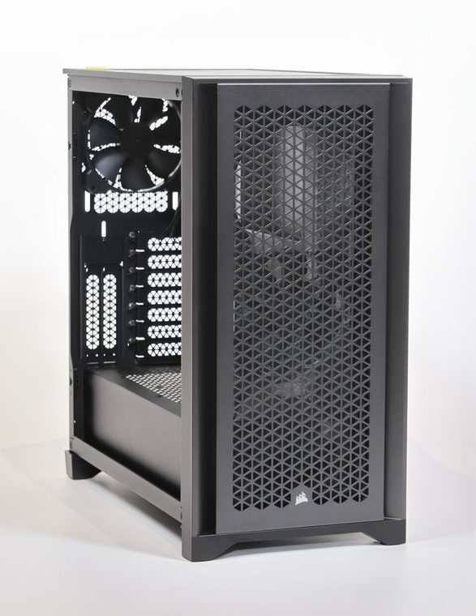
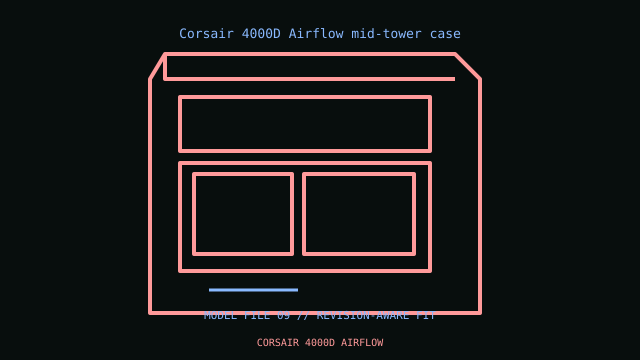

[ IDENTIFIED ENCLOSURE // TOWER AND LEGACY DESKTOP CASES ]
Corsair 4000D Airflow mid-tower case
453 × 230 × 466 mm H×W×D; mesh-front steel chassis. ATX/mATX/Mini-ITX; CPU cooler 170 mm, GPU 360 mm, PSU 220 mm in standard cage position.


VARIANT / ARCHIVAL CAVEAT: 4000D Airflow differs from solid-front 4000D and RGB 4000X. Front radiator may reduce GPU envelope; PSU/cage positions affect cable clearance.
Mechanical specifications and fit
| Catalog identity / revision | Corsair 4000D Airflow mid-tower case |
|---|---|
| Dimensions / construction | 453 × 230 × 466 mm H×W×D; mesh-front steel chassis. |
| Drive bays / storage | Two 3.5-inch trays and two 2.5-inch mounts. |
| Board, system and compatibility | ATX/mATX/Mini-ITX; CPU cooler 170 mm, GPU 360 mm, PSU 220 mm in standard cage position. |
| Revision / service note | 4000D Airflow differs from solid-front 4000D and RGB 4000X. Front radiator may reduce GPU envelope; PSU/cage positions affect cable clearance. |
Preservation and installation notes
Check the case’s cage, fan and radiator arrangement against the exact GPU, cooler and PSU dimensions; advertised maxima can be mutually exclusive.
- Photograph the complete model label, assembly revision and option identifiers before opening; keep matching covers, brackets, shields, trays and fasteners together.
- Confirm motherboard standoff positions and front-panel connector mapping before installation; remove only the standoffs that do not match the board.
Manufacturer manuals and model-specific sources
- Corsair 4000D Airflow mid-tower case manual and service documentationModel-specific manufacturer specification, owner/service manual or technical reference; verify exact model and revision.
Where normalized dimensions or option-specific limits are not published, the record states that limitation rather than asserting a generic fit. Verify the cited manual revision against the specimen.